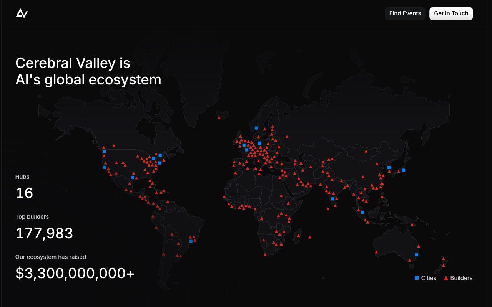
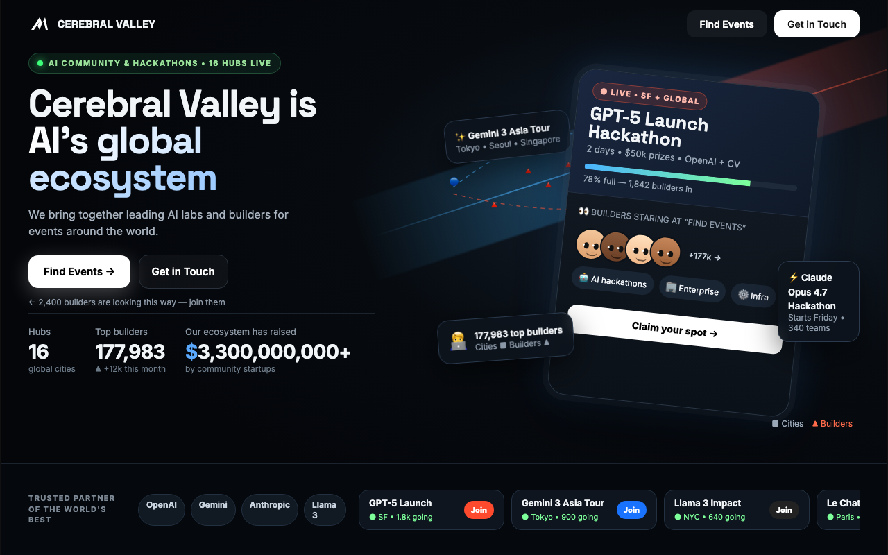

BEFORE · the live site

ui_score 0.567 · aesthetic top 35% · attention top 51% · judge 0.58
Face areas (FFA/STS) are silent: no human or gaze cue
Object-shape (LO) and motion (MT) areas are low: a text-first screen with no clear object silhouette
Attention drops after the first 2 s (+1.06 → +0.86): nothing to look at after the first impression
AFTER · BrainSense loop r1 — did not beat the live page; original kept

ui_score 0.516 · aesthetic top 87% · attention top 46% · judge 0.69
Face areas (FFA/STS) are silent: no human or gaze cue
Place areas (PPA/RSC) dominate: the background scene swallows the message
Object-shape (LO) and motion (MT) areas are low: a text-first screen with no clear object silhouette